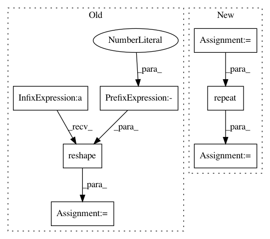

0408da50b93ea31e3ae92e65be746b8ebe066825,spynnaker/pyNN/models/common/spike_recorder.py,SpikeRecorder,get_spikes,#SpikeRecorder#Any#Any#Any#Any#Any#Any#Any#,43
Before Change
spike_times = list()
spike_ids = list()
ms_per_tick = machine_time_step / 1000.0
vertices = graph_mapper.get_machine_vertices(application_vertex)
missing_str = ""
progress = ProgressBar(vertices,
"Getting spikes for {}".format(label))
for vertex in progress.over(vertices):
placement = placements.get_placement_of_vertex(vertex)
vertex_slice = graph_mapper.get_slice(vertex)
x = placement.x
y = placement.y
p = placement.p
lo_atom = vertex_slice.lo_atom
// Read the spikes
n_words = int(math.ceil(vertex_slice.n_atoms / 32.0))
n_bytes = n_words * 4
n_words_with_timestamp = n_words + 1
// for buffering output info is taken form the buffer manager
neuron_param_region_data_pointer, data_missing = \
buffer_manager.get_data_for_vertex(
placement, region)
if data_missing:
missing_str += "({}, {}, {}); ".format(x, y, p)
record_raw = neuron_param_region_data_pointer.read_all()
raw_data = (numpy.asarray(record_raw, dtype="uint8").
view(dtype="<i4")).reshape(
[-1, n_words_with_timestamp])
if len(raw_data) > 0:
split_record = numpy.array_split(raw_data, [1, 1], 1)
record_time = split_record[0] * float(ms_per_tick)
spikes = split_record[2].byteswap().view("uint8")
bits = numpy.fliplr(numpy.unpackbits(spikes).reshape(
(-1, 32))).reshape((-1, n_bytes * 8))
time_indices, indices = numpy.where(bits == 1)
times = record_time[time_indices].reshape((-1))
indices = indices + lo_atom
spike_ids.append(indices)
spike_times.append(times)
After Change
spike_times = list()
spike_ids = list()
sampling_interval = self.get_spikes_sampling_interval()
vertices = graph_mapper.get_machine_vertices(application_vertex)
missing_str = ""
progress = ProgressBar(vertices,
"Getting spikes for {}".format(label))
for vertex in progress.over(vertices):
placement = placements.get_placement_of_vertex(vertex)
vertex_slice = graph_mapper.get_slice(vertex)
// Read the spikes
n_words = int(math.ceil(vertex_slice.n_atoms / 32.0))
n_bytes = n_words * 4
n_words_with_timestamp = n_words + 1
// for buffering output info is taken form the buffer manager
neuron_param_region_data_pointer, data_missing = \
buffer_manager.get_data_for_vertex(
placement, region)
if data_missing:
missing_str += "({}, {}, {}); ".format(
placement.x, placement.y, placement.p)
record_raw = neuron_param_region_data_pointer.read_all()
raw_data = (numpy.asarray(record_raw, dtype="uint8").
view(dtype="<i4")).reshape(
[-1, n_words_with_timestamp])
if len(raw_data) > 0:
split_record = numpy.array_split(raw_data, [1, 1], 1)
record_time = raw_data[0][0] * float(sampling_interval)
spikes = raw_data[0][1:].byteswap().view("uint8")
bits = numpy.fliplr(numpy.unpackbits(spikes).reshape(
(-1, 32))).reshape((-1, n_bytes * 8))
indices = numpy.where(bits == 1)[1]
times = numpy.repeat(record_time, len(indices))
indices = indices + vertex_slice.lo_atom
spike_ids.extend(indices)
spike_times.extend(times)
In pattern: SUPERPATTERN
Frequency: 3
Non-data size: 7
Instances
Project Name: SpiNNakerManchester/sPyNNaker
Commit Name: 0408da50b93ea31e3ae92e65be746b8ebe066825
Time: 2017-12-18
Author: christian.brenninkmeijer@manchester.ac.uk
File Name: spynnaker/pyNN/models/common/spike_recorder.py
Class Name: SpikeRecorder
Method Name: get_spikes
Project Name: markovmodel/PyEMMA
Commit Name: 7d11df30d7b62e47321775c3cd41fbe51a0305b2
Time: 2016-08-18
Author: christoph.wehmeyer@fu-berlin.de
File Name: pyemma/_base/subset.py
Class Name:
Method Name: globalise
Project Name: SpiNNakerManchester/sPyNNaker
Commit Name: 8245ac108f71b0cacd4161063feca19bdbb07a30
Time: 2017-12-18
Author: christian.brenninkmeijer@manchester.ac.uk
File Name: spynnaker/pyNN/models/common/spike_recorder.py
Class Name: SpikeRecorder
Method Name: get_spikes